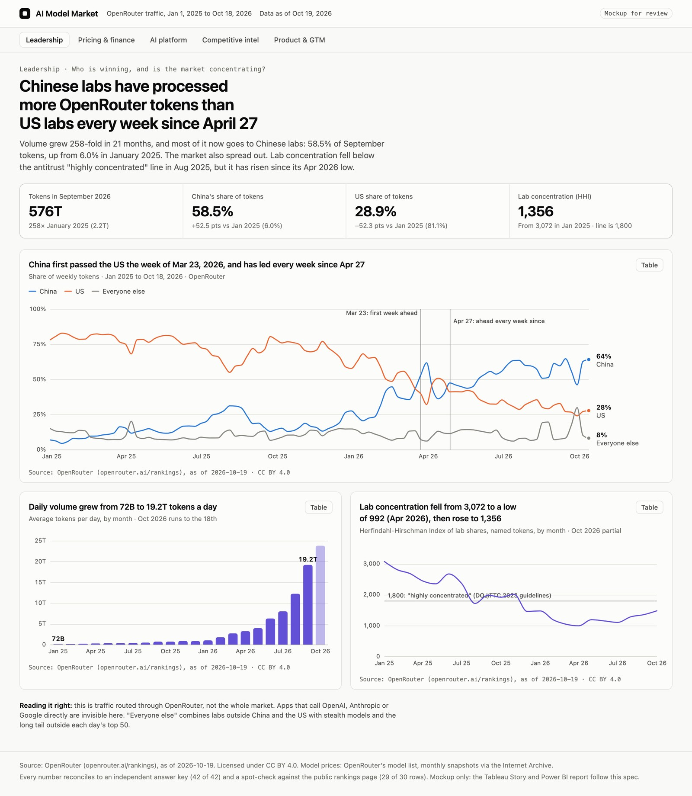
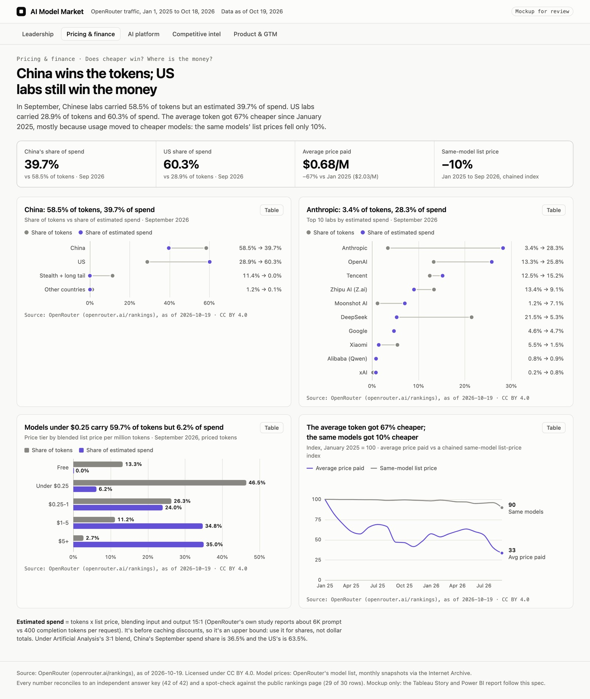

How an analyst would build a tech-industry dashboard from a real marketplace's usage data: the business questions, the data decisions, the checks, and how each chart was chosen and built in two tools.
| What | Detail |
|---|---|
| Business | OpenRouter, a marketplace that routes apps' requests to AI models: 470 models on 2026-10-19. Labs are the sellers, apps are the buyers, tokens are the volume. |
| Data | Daily top-50 models by tokens, 2025-01-01 to 2026-10-18 (654 days, 2.37 quadrillion tokens); monthly task categories; monthly top-100 apps; benchmarks; and 22 monthly snapshots of the price list (Internet Archive). |
| Audience | Leadership, pricing & finance, AI platform team, competitive intelligence, product & GTM |
| Deliverables | Tableau Story (5 story points, 5 dashboards, 13 sheets) and Power BI report (5 pages, 23 DAX measures, 15 tables), both generated as code from one DuckDB model |
| Headline | Chinese labs have processed more OpenRouter tokens than US labs every week since April 27, 2026 (58.5% vs 28.9% in September), but US labs still take an estimated 60.3% of the spend |
Who will use the dashboard, and what decision does each person own? OpenRouter is a two-sided marketplace, like Olist: labs supply models, apps buy tokens. The stakeholders and questions below are my own design.
| Stakeholder | Decision they own | Question the dashboard must answer |
|---|---|---|
| Leadership / strategy | Which labs to partner with or bet on | Who is winning tokens, and is the market concentrating or spreading out? |
| Pricing / finance | How to price, and where the money is | Does the cheapest model win? How does a lab's token share compare with its share of spend? |
| AI platform team | Which model to route each workload to | Which models give the best quality for the price? |
| Competitive intelligence | Where the threats come from | Are open-weight models and Chinese labs gaining on closed US models? |
| Product / GTM | Launch planning; which apps and tasks to court | Do new models keep their usage after launch? Which apps and tasks drive demand? |
Why this subject. I coded 221 analyst postings from 58 tech companies (my own job-search scans, Oct 9-19, 2026). With company boilerplate removed, 43% ask analysts to use AI tools in the work, 15% ask them to analyze AI itself (product usage, AI cost, model evaluation), and Tableau appears in 25% against Power BI's 8%. A real-data answer to "who is winning AI usage?" speaks to that demand directly.
Pull everything once, keep each response whole with its as_of stamp, then profile it: row counts, keys, date ranges, gaps, odd values.
| Source | What it holds | History |
|---|---|---|
| Rankings (daily) | Top 50 models per day by tokens, plus one "other" row | From 2025-01-01 |
| Rankings by category (monthly) | Top models within 12 task categories (sampled) | From 2025-05 |
| App rankings (monthly) | Top 100 apps by tokens and requests | From 2025-01 |
| Benchmarks | Artificial Analysis indices, Design Arena, OpenRouter evals | Snapshot |
| Model list + 22 Internet Archive snapshots | Prices, release dates, Hugging Face links (open weights) | Monthly, Jan 2025 to Oct 2026 |
51 API calls, capped and stopped at the first error. Eight findings shaped every later step:
:free variants, so each slug rolls up to a model family and a lab.A small star schema in DuckDB. Facts hold what you add up; dimensions hold what you filter by. Every foreign key is checked.
| Table | Grain | Why it exists |
|---|---|---|
| fct_model_day | model × day | Token volume; shares and concentration |
| mart_model_month | model × month | Tokens at that month's list price: estimated spend, price tiers |
| dim_model | model slug | Family, variant, lab, release date, open weights |
| dim_lab | organization | Country and type: 45 prefixes map to 42 organizations, each with a source (44 first-party) |
| dim_date / dim_month | day / month | Calendar, missing-day flags, data days per month |
Metric dictionary. Each metric is defined once and reused by both tools.
| Metric | Definition | Decision behind it |
|---|---|---|
| Token share | Tokens / all tokens that period, including the long tail | A share of named tokens would inflate every lab |
| Blended price | 15/16 input price + 1/16 output price | OpenRouter's own 100T-token study reports about 6K prompt vs 400 completion tokens per request; 3:1 kept as a check |
| Estimated spend | Tokens × blended list price | Before caching discounts, so an upper bound: used for shares, never dollar totals |
| Lab HHI | 10,000 × sum of squared lab shares of named tokens | Read against the DOJ/FTC 2023 line: above 1,800 is "highly concentrated" |
| Launch curve | A model family's daily share by week since it entered the top 50 | Only families first seen on or after 2025-02-01, so a launch is a real entry |
| Country | The developer's stated headquarters | Not where a model is hosted, and not a base model's origin |
16 integrity checks run after every build: tokens reconcile exactly to the raw pulls (2,368,187,299,116,173), shares sum to 100% every month, no orphan keys, no conflicting prices per snapshot.
Before any chart, compute the headline numbers a second, independent way: pandas reading only the raw files, sharing no code with the DuckDB model. These are the numbers every dashboard must match.
| Check | Value | Check | Value |
|---|---|---|---|
| China token share, Sep 2026 | 58.51% | US token share, Sep 2026 | 28.87% |
| China token share, Jan 2025 | 5.99% | US token share, Jan 2025 | 81.14% |
| China spend share, Sep 2026 | 39.68% | US spend share, Sep 2026 | 60.25% |
| Lab HHI, Jan 2025 → Sep 2026 | 3,072 → 1,356 | Average price paid, $/M | $2.03 → $0.68 |
| Top app, Sep 2026 | Hermes Agent 8.56% | Programming share of categories | 58.60% |
Result: 42 of 42 checks match the model. Reconciling first also caught a bug that looked plausible on screen:
| What looked fine | What was actually wrong | Fix |
|---|---|---|
| China's Sep 2026 spend share: 45.4% | A model's :batch or :free variant shares its base model's ID, and both registered under one price key. Claude Opus 5 was priced at the batch rate ($3.13/M, not $6.25) and MiniMax M3 at $0 | Variants register only as model:variant; ties break deterministically; a new check fails on two prices per key. True value: 39.7% |
Spot-check against the public page. The live openrouter.ai/rankings leaderboard (Today, This Week, This Month top 10s) was rebuilt from one extra API call: 29 of 30 rows match on model and rounded tokens. The one miss (Step 5 Preview, 8.21T vs 8.22T) is the top-50 cut: the model's last three days fell into "other". The two pulls also agreed on all 306 overlapping rows, so nothing was restated.
Each hypothesis was tested with several cuts. A finding makes the story only if it is big, reliable across cuts (including the 3:1 price blend) and actionable.
| Hypothesis | What the data said | Verdict |
|---|---|---|
| Chinese models now lead tokens | China first passed the US the week of Mar 23, 2026 and has led every week since Apr 27. It holds if every unattributed token were American (58.5% vs 40.3%) and without DeepSeek (47.2% vs 36.8%). It fails in March 2026 under every cut. | Kept: the hook. By requests it is a tie (44.3% vs 45.0%, one week) |
| Tokens and spend tell different stories | Sep 2026: China 58.5% of tokens but 39.7% of spend; Anthropic 3.4% of tokens but 28.3% of spend; DeepSeek 21.5% of tokens but 5.3% of spend. The gap was at least 18.8 points every month of 2026. | Kept: the central finding (the gap, not the level) |
| Cheap models win volume, premium wins spend | Models under $0.25/M carry 59.7% of tokens but 6.2% of spend. The average token got 67% cheaper; the same models' list prices fell 10%, so about nine-tenths of the drop is mix. | Kept |
| New models peak, then fade | 103 notable launches: by week 12 a model keeps 21% of its peak share, but its lab keeps 70%. US labs keep 72%, Chinese labs 49%. | Kept, reframed: models churn, labs retain |
| The market is spreading out | Lab HHI fell from 2,855 (Q1 2025) to 1,110 (Q2 2026) and has been below 1,800 every month since Dec 2025, but rose again in Q3 2026. | Kept, with the reversal stated |
| Top scorers aren't the most used | The 5 highest-scoring models took 2.0% of tokens in 90 days; the 5 most-used (scores 24.4-41.8) took 32.5%. Rank correlation 0.19. | Kept, framed as routing |
Guarding against over-claiming, written into the story rather than hidden:
Rule of thumb: the job decides the chart. Every chart gets one message, and the title states it with a verified number.
| Question | Chart chosen | Why this, and what was rejected |
|---|---|---|
| Who is winning, over time? | Weekly share lines: China, US, everyone else | A stacked area was rejected by the color validator (gray next to aqua: normal-vision ΔE 14.7, floor 15) |
| Tokens vs spend, by country and lab | Dumbbell / paired bars on one % axis | Same unit, so one axis; a dual-axis chart was ruled out |
| Did prices fall, or did mix shift? | Two indexed lines, Jan 2025 = 100 | Indexing puts both on one scale instead of two axes |
| Quality for the price | Bubble scatter, log price axis | Prices span $0.06-$75/M; a linear axis crams the cheap models into a corner |
| Is it one lab or many? | Small multiples, shared y-axis | Six lines on one chart would need six hues |
| Do launches stick? | Model vs lab line, indexed to the peak week | Shows the reframed finding in one glance |
Style rules, sourced to tech companies' own design systems: summary first and one chart per panel (GitLab Pajamas, dashboards); categorical colors in a strict fixed order (IBM Carbon), so China is blue and the US orange on every page; chart color on data marks only, and fade the rest for emphasis (Atlassian). Non-country charts are monochrome: violet for the measure the title is about, gray for its comparison. Every palette was run through a colorblind and contrast validator in light and dark.

Steps, in the order you would do them in the Power BI service (here on a Mac, with a Free license, so no Desktop):
measures.dax, including lab HHI as a SUMX over labs and spend share with REMOVEFILTERS.Problems the live build found, each fixed and re-checked: a measure named Tokens collided with the tokens column (DAX names ignore case); the log axis and the small-multiples grid needed Power BI's real property names, read back after setting them once in the editor; chart titles fell back to a serif font until the theme used web-font stacks; and redefining a date column broke Power BI's hidden date table, so model patches now add columns only.
Design before you build. All five pages were mocked up in HTML with the real numbers and approved before any Tableau work. Changing a mock takes minutes; re-laying a dashboard takes an hour.

A dashboard shows data; a story makes an argument. The story points follow an arc: hook, the twist, the mechanism, the threat, the lever.
| Story point | Role in the argument | Caption (the one thing to remember) |
|---|---|---|
| 1 Leadership | Hook: the center of gravity moved | Chinese labs have led OpenRouter tokens every week since April 27 |
| 2 Pricing & finance | Twist: volume isn't money | China wins the tokens; US labs still win the money |
| 3 AI platform | Mechanism: routing follows cost, not score | The most-used models are cheap mid-scorers |
| 4 Competitive intel | Threat: it's broad, not one lab | China's lead holds without DeepSeek and under the worst-case count |
| 5 Product & GTM | Lever: continuity keeps users | Models churn within weeks; labs keep most of their users |
Recommendations (my analysis, drawn from the findings):

Five layers of checks, from numbers to narrative. Each one catches a different kind of mistake.
| Layer | What you check | How |
|---|---|---|
| 1 Numbers | Every KPI and chart total equals the answer key | Pandas answer key 42/42; live Power BI DAX 22/22; public-page spot-check 29/30 |
| 2 Definitions | The same metric means the same thing everywhere | One metric dictionary; Tableau and Power BI read the same exported numbers |
| 3 Title claims | Every number in a title or caption is true | Titles are computed from the verified export, not typed; prose numbers re-checked against the data |
| 4 Sanity | Parts add up; nothing silently dropped | 16 integrity checks: exact token reconciliation, shares sum to 100%, no orphan keys |
| 5 Render | What the viewer sees matches the data | Every Power BI page inspected on screen; Tableau load checked through its own log |
Checking caught these before publishing: the variant-price bug (spend share 45.4% → 39.7%); lab retention for Chinese labs overstated (59% → 49%) because labs that left the top 50 had been skipped instead of counted as zero; a crossover date stated as July 6 that was really April 27; a price-tier share added from rounded parts (59.8% → 59.7%); and a "below 1,800 since Q4 2025" claim that was really "since December 2025".
Questions to ask a reviewer before publishing: would a stakeholder reach a different conclusion from the same chart? Is any claim causal that the data only shows as a correlation? What would make the main finding wrong (direct API traffic, caching discounts, stealth models)?
| Stage | Done when |
|---|---|
| Brief | Each stakeholder has written questions and a decision attached |
| Data | Every response stored with its as-of stamp; gaps, IDs and partial periods understood |
| Model | Star schema with checked keys; metric dictionary written; lookups sourced |
| Answer key | Headline numbers computed independently, plus a check against the public source |
| Explore | Each kept finding is big, reliable and actionable; caveats written down |
| Charts | One message per chart; insight title with a verified number; palette validated |
| Build | Both tools reconcile; titles generated from data; render checked |
| Story | Captions tell the argument in order; recommendations labelled as analysis |
Sources. OpenRouter Data API and rankings (openrouter.ai/docs/cookbook/administration/data-api; openrouter.ai/rankings), CC BY 4.0, as of 2026-10-19. Benchmarks: Artificial Analysis via OpenRouter. "State of AI: An Empirical 100 Trillion Token Study with OpenRouter" (arXiv 2601.10088). Menlo Ventures 2025 State of Generative AI in the Enterprise (as reported by BigDATAwire). DOJ/FTC 2023 Merger Guidelines (HHI 1,800). IBM Carbon, GitLab Pajamas and Atlassian design systems (data visualization guidance). Independent analysis, not affiliated with OpenRouter or any lab. Code, data and definitions: github.com/Ajay0704/ai-model-market.